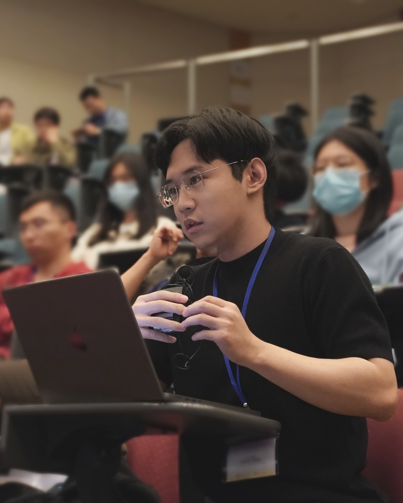

Ph. D. Student
Human-Computer Communications Laboratory (HCCL)
The Chinese University of Hong Kong (CUHK)
Email: jwkang [at] se.cuhk.edu.hk
Google ScholarI am a Ph.D. student at The Chinese University of Hong Kong (CUHK), supervised by Prof. Helen Meng. I am interested in speech-language machine perception and analytics, including speech and speaker recognition, neurocognitive disorder (NCD) detection and analytics, and conversational human-computer interaction.
Before joining CUHK, I worked at Centor for Speech and Language Technology (CSLT) @ Tsinghua University, supervised by Prof. Dong Wang . I obtained my Bachelor's degree from Jilun University (JLU), where I worked in optical signal processing as a Student Intern.
Research on conversational human-computer interaction & speaker diarization
Research on robust speaker recognition
Research on optical signal processing algorithms
Ranking: 2/14
Research and development of artificial intelligence in extraction and identification of spoken language biomarkers for screening and monitoring of neurocognitive disorders
A conversational agent with backchanneling
A solution for cross-device statistical mismatch in speaker recognition
A large-scale multi-genre speaker recognition corpus containing 3,000 speakers with 11 different genres
A commercial-grade end-to-end Chinese text-to-speech system
2021-2022 Term 2, 2022-2023 Term 2, 2023-2024 Term 2
2021-2022 Term 2, 2022-2023 Term 2